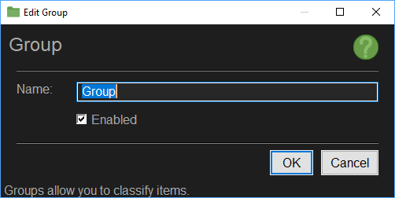

The Edit Group Interface allows you to change the name of a group as well as enabling or disabling the group.

Groups are used to categorize items in the tree-view in a way that makes sense to you.
Groups are mainly useful to split a ton of items that would use a lot of vertical space into smaller more manageable sections.
Since items in the branches are sorted by name as a mean to allow you to prioritize some of the action (See Window Action) a group may help you to prioritize actions and contexts by allowing you to move alphabetical items that would normally find their way to the bottom of an action list by placing them in a group that is named in such a way that it is located at the top of the list. This may not make sense to you right now but it will as you start to develop Window Action based rule-sets.
Groups can be added under pretty much any items that support sub items, like Applications and Games, Applications, Context Actions, Window Actions and other Groups, they will take the identity type of the parent item. Later with the copy and paste this identity type will help to ensure items are not moved under the wrong type of container.
Aside the case mentioned above for Groups allowing changing a Window Action ordinal position, groups are basically ignored by the run time engine. Items located under a group will look like they are located directly under the main branch of the group hierarchy. So items under a Group in the Application branch will look as though they are under the Application branch
Change Note: With the Addition of the Enabled Flag, Disabled Groups will disable the Actions and Items located under them.
Specify the name for the Group.
Specify if the Group is enabled. Disabled groups disable all items down the group branch.
Applies the changes and closes the dialog box. Some changes may require a restart.
Cancels the changes and closes the dialog box.